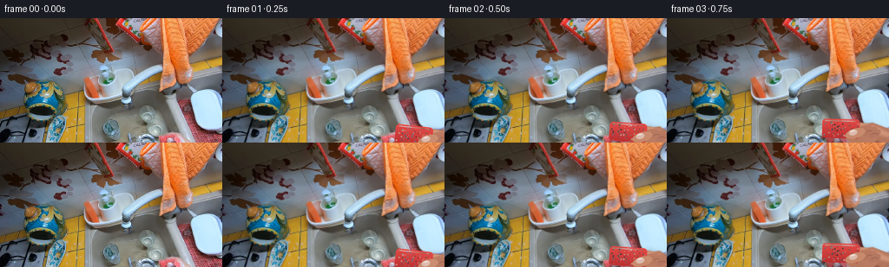
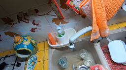
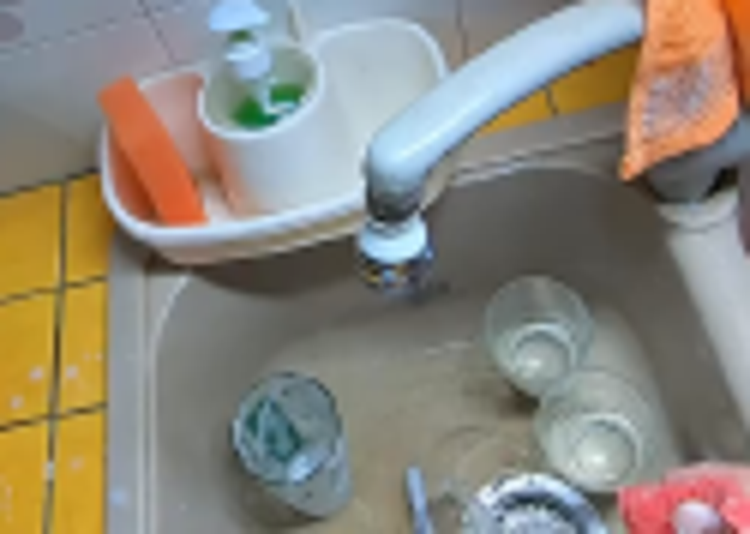
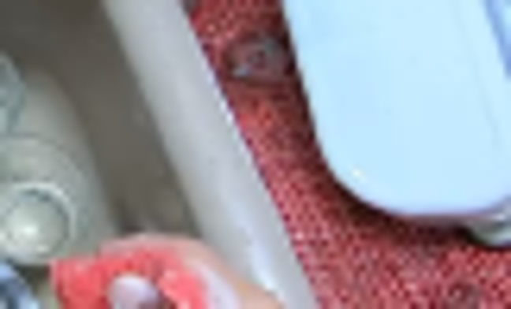
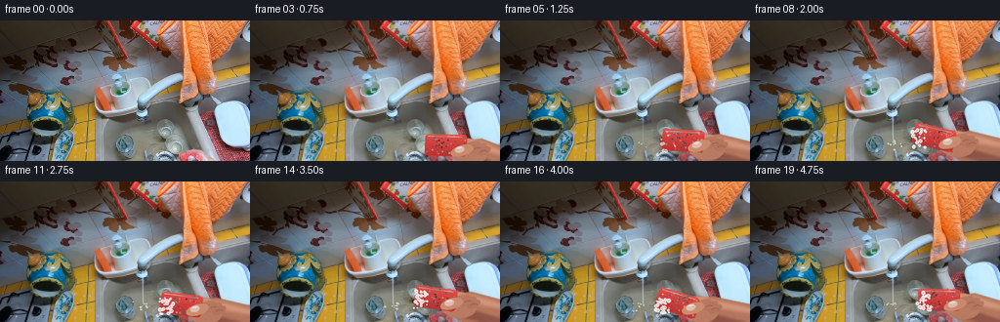
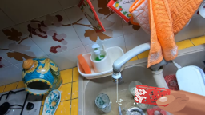
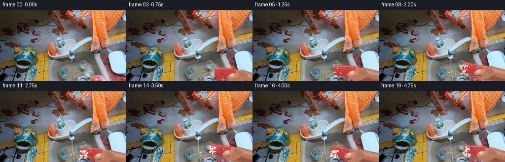

CODING AGENTS AS PIXEL WORLD MODELS
traex/GPT-5.6-Sol · common50_0027
点击播放 · 原生 RGB 像素
逐轮保存的候选
回放视频、检查图与代码变化。
每份候选均可单独播放。实际图片检查记录在下方工具轨迹中。
候选 01播放与检查图
点击播放 · 原生 RGB 像素


展开代码变化
--- 上一保存版本
+++ 本次保存版本
@@ -0,0 +1,208 @@
+from pathlib import Path
+import math
+import numpy as np
+from PIL import Image, ImageDraw, ImageFilter
+import artifact_io
+
+# Deterministic, pixel-based animation of a hand reaching into the pictured sink.
+ROOT = Path(__file__).resolve().parent
+base = Image.open(ROOT / "first_frame.png").convert("RGB")
+W, H = base.size
+S = 4
+rng = np.random.default_rng(271828)
+
+
+def ease(x):
+ x = max(0.0, min(1.0, x))
+ return x * x * (3 - 2 * x)
+
+
+def mask_from_shape(kind, box, angle=0, blur=0):
+ """Antialiased full-frame L mask, geometry in output pixel coordinates."""
+ m = Image.new("L", (W * S, H * S), 0)
+ d = ImageDraw.Draw(m)
+ b = tuple(int(round(v * S)) for v in box)
+ if kind == "ellipse":
+ d.ellipse(b, fill=255)
+ elif kind == "round":
+ d.rounded_rectangle(b, radius=max(1, int((box[3] - box[1]) * S * .32)), fill=255)
+ if angle:
+ x0, y0, x1, y1 = box
+ pad = 12
+ lw = int((x1 - x0 + 2 * pad) * S)
+ lh = int((y1 - y0 + 2 * pad) * S)
+ lm = Image.new("L", (lw, lh), 0)
+ ld = ImageDraw.Draw(lm)
+ bb = (pad * S, pad * S, (pad + x1 - x0) * S, (pad + y1 - y0) * S)
+ if kind == "ellipse":
+ ld.ellipse(bb, fill=255)
+ else:
+ ld.rounded_rectangle(bb, radius=max(1, int((y1 - y0) * S * .32)), fill=255)
+ lm = lm.rotate(angle, resample=Image.Resampling.BICUBIC, expand=False)
+ m = Image.new("L", (W * S, H * S), 0)
+ m.paste(lm, (int((x0 - pad) * S), int((y0 - pad) * S)), lm)
+ if blur:
+ m = m.filter(ImageFilter.GaussianBlur(blur * S))
+ return m
+
+
+def add_colored(im, mask, color, noise=0, highlight=0):
+ yy, xx = np.mgrid[0:H * S, 0:W * S]
+ arr = np.empty((H * S, W * S, 4), dtype=np.uint8)
+ shade = (highlight * (0.62 - yy / (H * S)) + 2.0 * np.sin(xx / 37.0)).astype(np.float32)
+ if noise:
+ small = rng.normal(0, noise, (H, W)).astype(np.float32)
+ tex = np.asarray(Image.fromarray(small, mode="F").resize((W * S, H * S), Image.Resampling.BILINEAR))
+ shade += tex
+ for k, c in enumerate(color):
+ arr[..., k] = np.clip(c + shade, 0, 255)
+ arr[..., 3] = np.asarray(mask)
+ im.alpha_composite(Image.fromarray(arr, "RGBA"))
+
+
+def polygon_mask(points, blur=0):
+ m = Image.new("L", (W * S, H * S), 0)
+ ImageDraw.Draw(m).polygon([(int(x * S), int(y * S)) for x, y in points], fill=255)
+ if blur:
+ m = m.filter(ImageFilter.GaussianBlur(blur * S))
+ return m
+
+
+def draw_arm_and_hand(canvas, cx, cy, angle, frame_idx):
+ """A layered, shaded right hand gripping a textured red sponge."""
+ # Contact shadow anchors the hand to the wet sink.
+ shadow = Image.new("RGBA", (W * S, H * S), (0, 0, 0, 0))
+ sd = ImageDraw.Draw(shadow)
+ sd.ellipse(((cx - 22) * S, (cy - 8) * S, (cx + 49) * S, (cy + 24) * S), fill=(18, 15, 12, 75))
+ shadow = shadow.filter(ImageFilter.GaussianBlur(3.3 * S))
+ canvas.alpha_composite(shadow)
+
+ # Forearm comes from the lower-right first-person camera edge.
+ upper = [(cx + 18, cy - 5), (cx + 36, cy - 8), (W + 5, cy + 1),
+ (W + 8, H + 8), (cx + 27, cy + 23), (cx + 11, cy + 14)]
+ add_colored(canvas, polygon_mask(upper, .45), (184, 123, 98), noise=1.5, highlight=18)
+ under = [(cx + 14, cy + 10), (cx + 28, cy + 19), (W, H + 5),
+ (W, cy + 19), (cx + 31, cy + 9)]
+ add_colored(canvas, polygon_mask(under, 1.2), (145, 88, 73), noise=.7, highlight=8)
+ hi = [(cx + 25, cy - 4), (cx + 36, cy - 5), (W, cy + 4),
+ (W, cy + 9), (cx + 31, cy + 3)]
+ add_colored(canvas, polygon_mask(hi, 1.5), (211, 151, 124), noise=.5, highlight=8)
+
+ # Palm and knuckle mound behind the sponge.
+ add_colored(canvas, mask_from_shape("ellipse", (cx + 3, cy - 8, cx + 42, cy + 19), -9, .35),
+ (192, 130, 104), noise=1.1, highlight=18)
+ add_colored(canvas, mask_from_shape("ellipse", (cx + 15, cy - 7, cx + 37, cy + 5), -12, .25),
+ (208, 149, 120), noise=.6, highlight=10)
+
+ # Back curled fingers at the far edge of the sponge.
+ for j, (ox, oy, ln) in enumerate([(14, -4, 21), (23, -2, 19), (31, 1, 15)]):
+ fm = mask_from_shape("ellipse", (cx + ox, cy + oy, cx + ox + ln, cy + oy + 8), 20 + j * 3, .18)
+ add_colored(canvas, fm, (190 - j * 3, 126 - j * 2, 101 - j), noise=.8, highlight=13)
+ lay = Image.new("RGBA", (W * S, H * S), (0, 0, 0, 0))
+ ld = ImageDraw.Draw(lay)
+ x = (cx + ox + ln * .56) * S
+ y = (cy + oy + 5) * S
+ ld.arc((x - 5 * S, y - 2 * S, x + 4 * S, y + 4 * S), 200, 330,
+ fill=(105, 66, 56, 85), width=max(1, S))
+ canvas.alpha_composite(lay)
+
+ # Irregular coral-red kitchen sponge with visible porous texture.
+ sw, sh = 43, 22
+ local = Image.new("RGBA", (58 * S, 40 * S), (0, 0, 0, 0))
+ lm = Image.new("L", local.size, 0)
+ lmd = ImageDraw.Draw(lm)
+ bx, by = 7 * S, 8 * S
+ lmd.rounded_rectangle((bx, by, bx + sw * S, by + sh * S), radius=4 * S, fill=255)
+ for _ in range(18):
+ ex = int(rng.uniform(bx, bx + sw * S))
+ ey = int(rng.choice([rng.uniform(by, by + 2 * S), rng.uniform(by + sh * S - 2 * S, by + sh * S)]))
+ lmd.ellipse((ex - S, ey - S, ex + S, ey + S), fill=int(rng.integers(140, 235)))
+ yy, xx = np.mgrid[0:local.height, 0:local.width]
+ grad = 1.0 - (yy - by) / (sh * S)
+ sp = np.zeros((local.height, local.width, 4), dtype=np.uint8)
+ sp[..., 0] = np.clip(188 + 40 * grad, 0, 255)
+ sp[..., 1] = np.clip(48 + 28 * grad, 0, 255)
+ sp[..., 2] = np.clip(48 + 24 * grad, 0, 255)
+ sp[..., 3] = np.asarray(lm)
+ local = Image.fromarray(sp, "RGBA")
+ ld = ImageDraw.Draw(local)
+ for k in range(74):
+ px = rng.uniform(9, 49) * S
+ py = rng.uniform(10, 28) * S
+ r = rng.uniform(.25, 1.05) * S
+ col = ((100, 24, 31, int(rng.integers(65, 155))) if k % 3
+ else (255, 144, 125, int(rng.integers(70, 145))))
+ ld.ellipse((px - r, py - r, px + r, py + r), fill=col)
+ ld.line(((10 * S, 10 * S), (45 * S, 10 * S)), fill=(255, 165, 147, 130), width=S)
+ local = local.rotate(angle, Image.Resampling.BICUBIC, expand=False)
+ canvas.alpha_composite(local, (int((cx - 29) * S), int((cy - 20) * S)))
+
+ # Thumb presses visibly across its face; nail catches overhead light.
+ add_colored(canvas, mask_from_shape("ellipse", (cx + 4, cy - 1, cx + 28, cy + 10), 17, .18),
+ (207, 145, 115), noise=.7, highlight=16)
+ add_colored(canvas, mask_from_shape("ellipse", (cx + 8.5, cy + .2, cx + 18.5, cy + 6.8), 14, .12),
+ (224, 190, 177), noise=.25, highlight=9)
+ add_colored(canvas, mask_from_shape("ellipse", (cx + 10.2, cy + .9, cx + 16.5, cy + 2.5), 13, .2),
+ (244, 224, 215), highlight=4)
+
+ # Suds accumulate once the sponge reaches the glass.
+ contact = ease((frame_idx - 4) / 5)
+ if contact > 0:
+ bubbles = Image.new("RGBA", (W * S, H * S), (0, 0, 0, 0))
+ bd = ImageDraw.Draw(bubbles)
+ count = int(6 + 20 * contact)
+ rrng = np.random.default_rng(900 + frame_idx)
+ for _ in range(count):
+ bx2 = cx - 20 + rrng.uniform(-3, 12)
+ by2 = cy + rrng.uniform(-10, 10)
+ r = rrng.uniform(.65, 2.25)
+ alpha = int(115 + 70 * contact)
+ bd.ellipse(((bx2 - r) * S, (by2 - r) * S, (bx2 + r) * S, (by2 + r) * S),
+ fill=(238, 247, 244, alpha), outline=(255, 255, 255, min(240, alpha + 35)), width=S)
+ if r > 1.3:
+ bd.ellipse(((bx2 - .45 * r) * S, (by2 - .55 * r) * S,
+ (bx2 - .05 * r) * S, (by2 - .15 * r) * S), fill=(255, 255, 255, 210))
+ canvas.alpha_composite(bubbles.filter(ImageFilter.GaussianBlur(.10 * S)))
+
+
+def add_water(canvas, i):
+ wet = ease((i - 3) / 5)
+ if wet <= 0:
+ return
+ lay = Image.new("RGBA", (W * S, H * S), (0, 0, 0, 0))
+ d = ImageDraw.Draw(lay)
+ # A thin translucent stream starts at the pictured aerator.
+ d.line(((146.2 * S, 91 * S), (146.7 * S, 126 * S)), fill=(203, 232, 236, int(105 * wet)), width=5)
+ d.line(((145.8 * S, 92 * S), (146.0 * S, 125 * S)), fill=(250, 255, 255, int(130 * wet)), width=2)
+ rr = np.random.default_rng(1600 + i)
+ for _ in range(int(4 + 7 * wet)):
+ x = 146 + rr.normal(0, 4.5)
+ y = 127 + rr.normal(0, 2.5)
+ r = rr.uniform(.3, 1.0)
+ d.ellipse(((x - r) * S, (y - r) * S, (x + r) * S, (y + r) * S),
+ fill=(225, 248, 250, int(80 + 90 * wet)))
+ canvas.alpha_composite(lay)
+
+
+frames = []
+for i in range(20):
+ if i == 0:
+ frames.append(np.asarray(base).copy())
+ continue
+ # Work at 4x resolution for natural camera-like antialiased silhouettes.
+ im = base.convert("RGBA").resize((W * S, H * S), Image.Resampling.NEAREST)
+ r = ease(i / 5.0)
+ cx = 225 * (1 - r) + 188 * r
+ cy = 138 * (1 - r) + 124 * r
+ if i > 5:
+ phase = (i - 5) * math.pi / 3.15
+ cx = 188 + 6.2 * math.sin(phase)
+ cy = 124 + 3.1 * math.cos(phase * 1.05)
+ angle = -9 + (8 * math.sin((i - 4) * math.pi / 3.4) if i > 4 else 2.5 * i)
+ add_water(im, i)
+ draw_arm_and_hand(im, cx, cy, angle, i)
+ frames.append(np.asarray(im.convert("RGB").resize((W, H), Image.Resampling.LANCZOS), dtype=np.uint8))
+
+frames = np.stack(frames)
+frames[0] = np.asarray(base, dtype=np.uint8) # contractual pixel identity
+artifact_io.save(frames, ROOT)
候选 02播放与检查图
点击播放 · 原生 RGB 像素

展开代码变化
--- 上一保存版本
+++ 本次保存版本
@@ -189,8 +189,9 @@
if i == 0:
frames.append(np.asarray(base).copy())
continue
- # Work at 4x resolution for natural camera-like antialiased silhouettes.
- im = base.convert("RGBA").resize((W * S, H * S), Image.Resampling.NEAREST)
+ # Work on a transparent 4x overlay. Compositing it onto the original only
+ # after downsampling keeps every untouched background pixel perfectly still.
+ im = Image.new("RGBA", (W * S, H * S), (0, 0, 0, 0))
r = ease(i / 5.0)
cx = 225 * (1 - r) + 188 * r
cy = 138 * (1 - r) + 124 * r
@@ -201,7 +202,9 @@
angle = -9 + (8 * math.sin((i - 4) * math.pi / 3.4) if i > 4 else 2.5 * i)
add_water(im, i)
draw_arm_and_hand(im, cx, cy, angle, i)
- frames.append(np.asarray(im.convert("RGB").resize((W, H), Image.Resampling.LANCZOS), dtype=np.uint8))
+ overlay = im.resize((W, H), Image.Resampling.LANCZOS)
+ out = Image.alpha_composite(base.convert("RGBA"), overlay).convert("RGB")
+ frames.append(np.asarray(out, dtype=np.uint8))
frames = np.stack(frames)
frames[0] = np.asarray(base, dtype=np.uint8) # contractual pixel identity
可观测工具轨迹
实际执行的命令与返回图片。
命令 1exit 0
/bin/bash -lc 'cat GENERATION_RULES.md'
命令 2exit 0
/bin/bash -lc "cat prompt.txt && printf '\\n---FILES---\\n' && find . -maxdepth 2 -type f -printf '%p %s bytes\\n' | sort"
命令 3exit 0
/bin/bash -lc "python - <<'PY'
from PIL import Image
im=Image.open('first_frame.png')
im.crop((80,55,205,144)).resize((750,534)).save('inspect.png')
PY"命令 4exit 0
/bin/bash -lc 'cat artifact_io.py && cat task_spec.json'
命令 5exit 0
/bin/bash -lc "python - <<'PY'
from PIL import Image
im=Image.open('first_frame.png')
for name,box in [('br',(175,95,256,144)),('sink',(105,75,220,144)),('sp',(205,120,256,144))]:
im.crop(box).resize(((box[2]-box[0])*8,(box[3]-box[1])*8)).save(name+'.png')
PY"命令 6exit 0
/bin/bash -lc 'python generate.py'
命令 7exit 0
/bin/bash -lc "python - <<'PY'
from pathlib import Path
import numpy as np
from PIL import Image
root=Path('.')
first=np.asarray(Image.open(root/'first_frame.png').convert('RGB'))
files=sorted((root/'frames').glob('*.png'))
arr=np.stack([np.asarray(Image.open(p).convert('RGB')) for p in files])
print('frames',len(files),'shape',arr.shape,'dtype',arr.dtype)
print('frame00_identical',np.array_equal(arr[0],first),'maxdiff',np.abs(arr[0].astype(int)-first.astype(int)).max())
print('successive_changed_pixels',[int(np.any(arr[i]"'!=arr[i-1],axis=2).sum()) for i in range(1,20)])
z=np.load(root/'"'pixels.npz')['pixels']
print('pixels.npz',z.shape,z.dtype,'artifacts',[(p.name,p.stat().st_size) for p in [root/'pixels.npz',root/'index.html',root/'inspection.png']])
PY"命令 8exit 0
/bin/bash -lc "python generate.py >/dev/null && python - <<'PY'
import numpy as np
from PIL import Image
from pathlib import Path
p=Path('.')
a=np.stack([np.asarray(Image.open(x)) for x in sorted((p/'frames').glob('*.png'))])
f=np.asarray(Image.open('first_frame.png'))
print(a.shape,a.dtype,np.array_equal(a[0],f))
print([int(np.any(a[i]"'!=a[i-1],2).sum()) for i in range(1,20)])
PY'视觉工具实际返回图片 1

视觉工具实际返回图片 2

视觉工具实际返回图片 3

视觉工具实际返回图片 4

视觉工具实际返回图片 5

视觉工具实际返回图片 6

视觉工具实际返回图片 7

保存候选 2 份；完成命令 8 次；可验证图片返回 7 张。原始 API 响应与完整日志保留在本地。